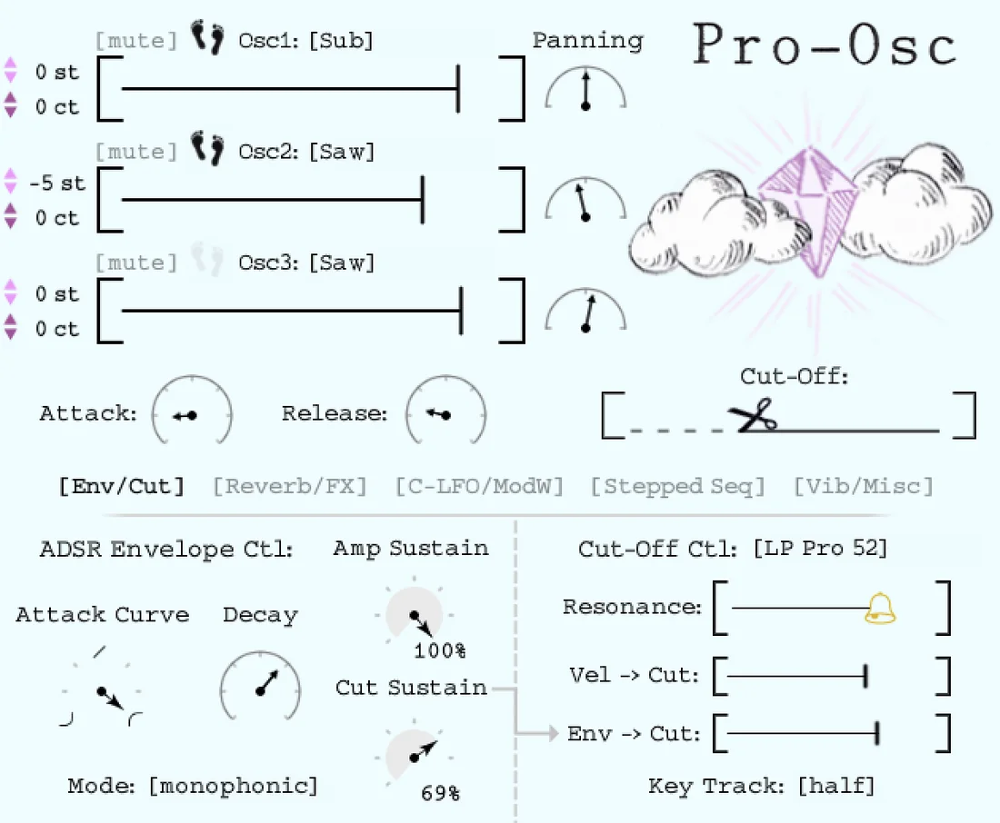
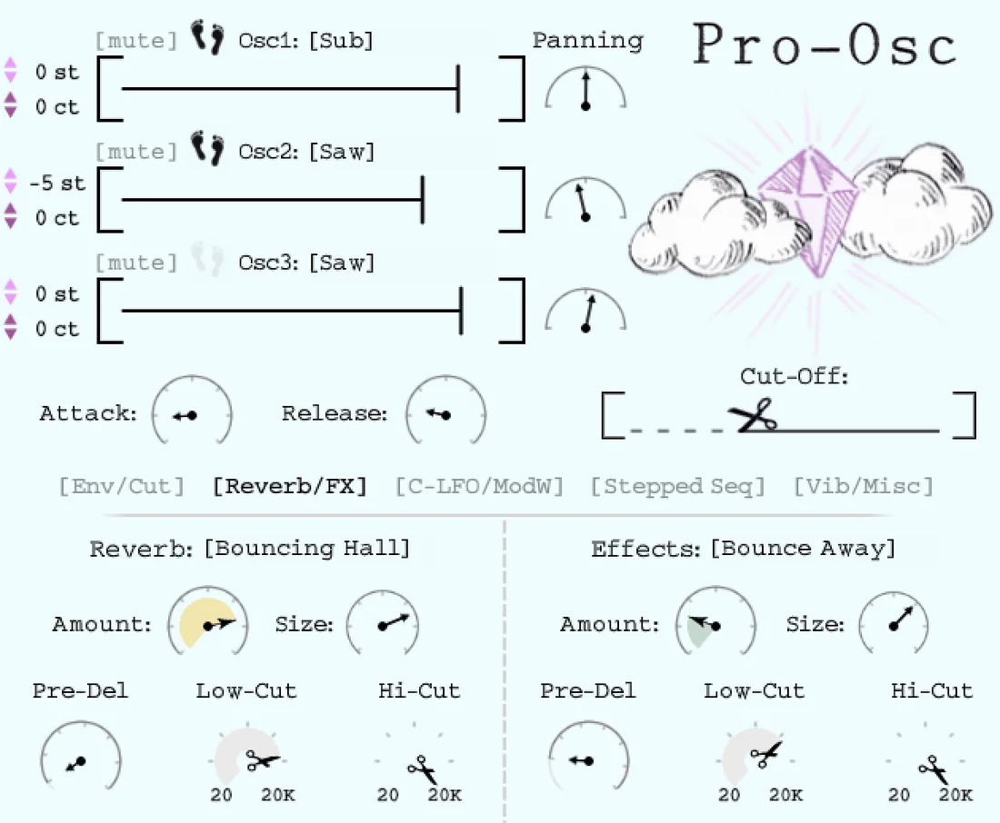
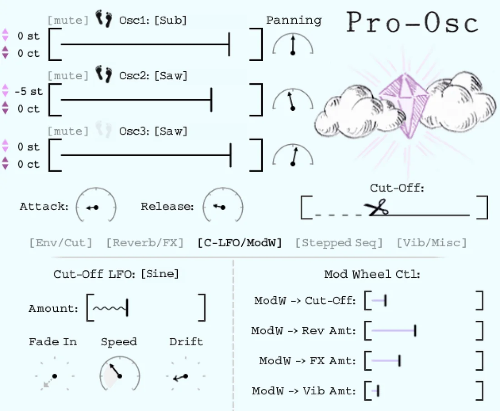
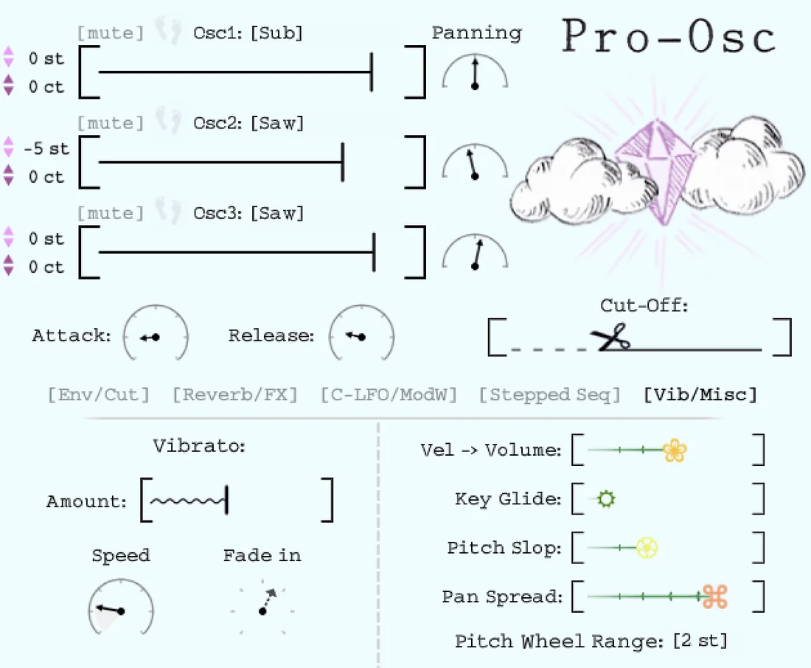

Analógico, de la Osc Collection
Pro‑Osc
Un sintetizador analógico vintage, muestreado en un instrumento moderno.
Construido a partir de los osciladores en bruto de un sintetizador analógico vintage con filtro Curtis y envuelto en una interfaz dibujada a mano. Una calidez cinematográfica que llena la sala, y 83 presets hechos a mano sin relleno, todos para tocar desde la rueda de modulación.
O llévate los cinco en la Osc Collection por $99. ¿Primera vez aquí? Prueba DEM-Osc gratis.
- Funciona en el Kontakt Player gratuito
- macOS y Windows
- 83 presets, sin relleno





Sonidos reales,
directo de Pro‑Osc.
Cuatro presets y un tema completo. Cada sonido de abajo se hizo solo con Pro-Osc.
Toca un sonido. Se reproduce en streaming, no hay nada que descargar.
Se ve juguetón. Y luego lo escuchas.
Cada perilla está dibujada a mano, y lo que suena debajo es un sintetizador analógico vintage real, muestreado forma por forma y pasado por espacios reales.
"El sonido aquí es serio... me gusta mucho."
Lo que hay bajo el capó
- 14
Formas de onda, de tres en tres
Tres selectores de oscilador, cada uno con 14 formas muestreadas de un sintetizador analógico vintage con filtro Curtis, además de afinación y paneo por oscilador.
- 30
Espacios de convolución incluidos
Síntesis cruzada a través de nuestras reverbs de hardware y efectos eurorack favoritos: 15 reverbs y 15 FX, listos para convolucionar tu sonido.
- ↻
Un secuenciador por pasos con una vuelta de tuerca
Solo avanza cuando llega una nota y cambia la forma de onda cargada en cada nota para dar vida a melodías y acordes.
- ∿
LFO de Cut-Off y un centro de mando en la rueda de modulación
Un LFO dedicado al filtro con muchísimas formas, además de un centro de control que asigna muchos parámetros a la vez a tu rueda de modulación.
- ≈
Vibrato, glide, slop y spread
Vibrato clásico con velocidad y fade-in, además de glide polifónico, slop de afinación y spread de paneo para que todo suene vivo y humano.
Mira Pro‑Osc en acción.
¿Prefieres un recorrido guiado? Mira el tutorial de Pro-Osc ↗
Todo lo que incluye.
Características principales
- 83 presets hechos a mano, sin relleno
- 14 formas de onda de un sintetizador analógico vintage con filtro Curtis
- 30 respuestas de impulso propias (15 reverbs + 15 FX eurorack)
- Secuenciador por pasos activado por notas
- LFO de Cut-Off, Vibrato, Pitch Slop y Glide polifónico
- Compatibilidad total con NKS: Maschine y Komplete Kontrol
Requisitos
- Instalación y descarga con Native Access
- Funciona en el Kontakt 6+ Player gratuito, Kontakt 6 y 7 completos, Komplete Kontrol o Maschine 2
- macOS y Windows
A los productores les encanta.
- ★★★★★
"Desde el primer acorde me quedé sin palabras: por fin sintetizadores de software con alma, y suenan espectaculares."
- ★★★★★
"Pro-Osc está repleto de bondad analógica: un sonido exuberante y cálido, con una singularidad que recuerda a la época en que los sintetizadores dominaban las ondas."
- ★★★★★
"Sonidos analógicos auténticos. Los gráficos y el diseño son de primera, y los presets son un gran punto de partida para la exploración sonora. Sin duda, una obra hecha con amor."
Pro-Osc está hecho por Clay and Kelsy Instruments, nuestra pequeña y adorable empresa de software. Creamos los instrumentos y las herramientas que necesitamos para seguir produciendo música. Nuestra música se ha reproducido más de 2 millones de veces, y nuestros instrumentos se han descargado más de 10,000 veces.
Consigue Pro‑Osc.
O llévate los cinco, la Osc Collection por $99 (ahorra $46). ¿Primera vez aquí? DEM-Osc es gratis.
¿Necesito tener Kontakt?
No. Pro-Osc funciona en el Kontakt Player gratuito (Kontakt 6 o superior). Instálalo con Native Access.
¿Qué sistemas operativos son compatibles?
macOS y Windows, con compatibilidad total con NKS para Maschine y Komplete Kontrol.
¿Qué incluye?
Tres osciladores con 14 formas de onda cada uno de un sintetizador analógico vintage con filtro Curtis, 30 espacios de convolución, un secuenciador por pasos activado por notas, un centro de mando en la rueda de modulación y 83 presets hechos a mano.